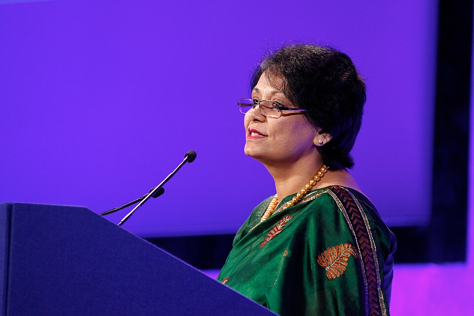
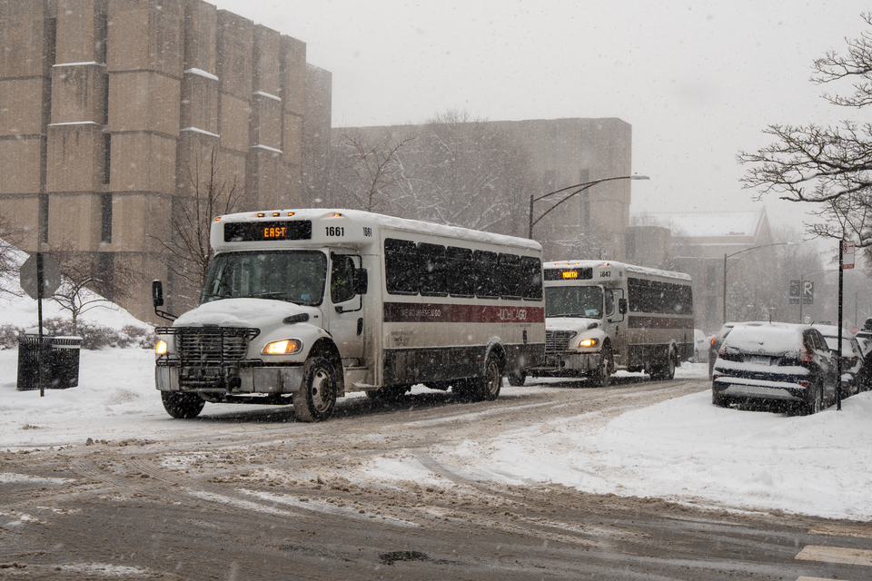
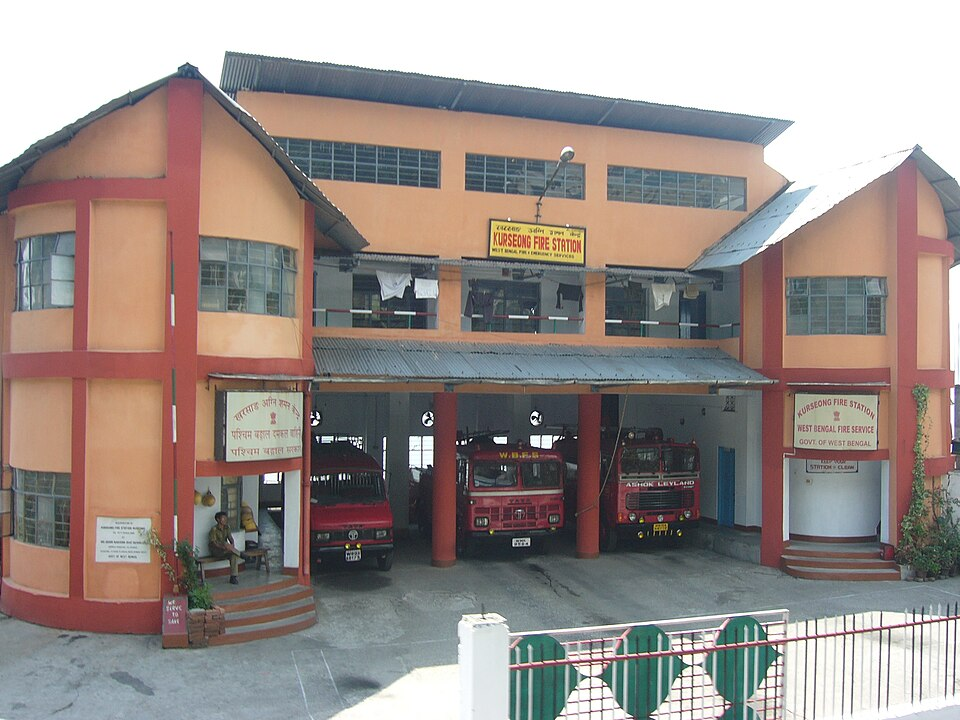
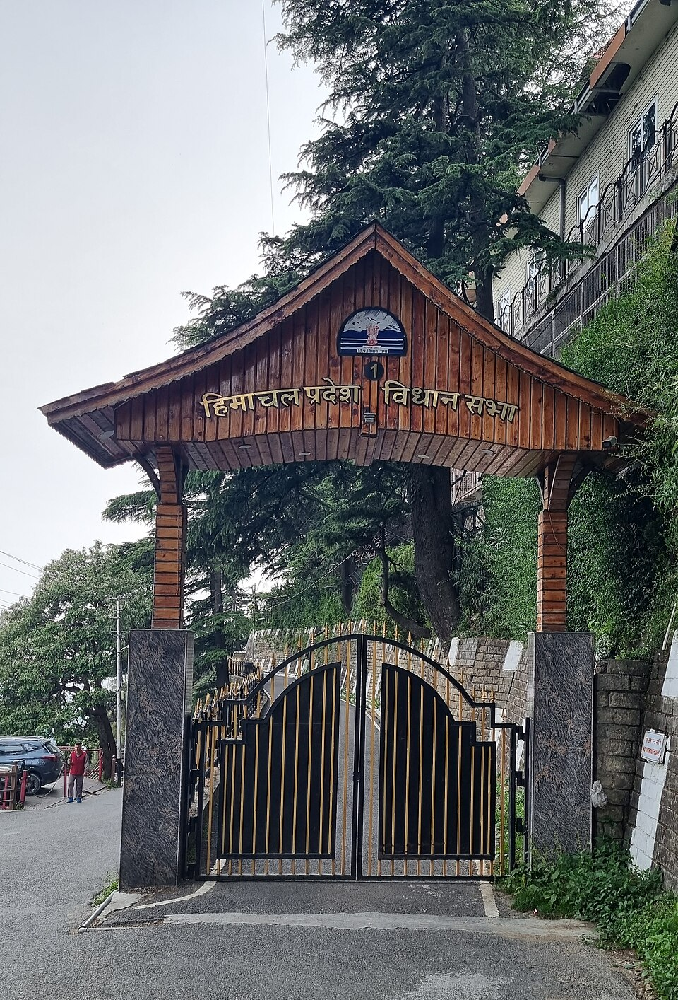
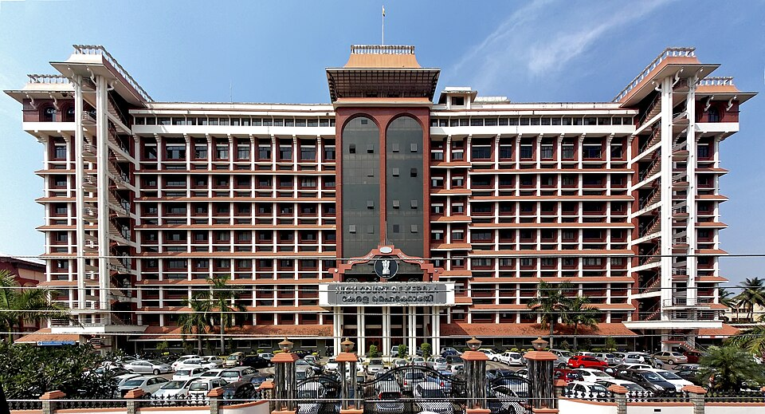

राष्ट्रीय
फतेहपुर में संपत्ति विवाद: छह महीने बाद थाने में गले मिले दो भाई
उत्तर प्रदेश के फतेहपुर जिले में करोड़ों की संपत्ति के बंटवारे को लेकर छह महीने से चल रहा विवाद पुलिस की पहल पर सुलझ गया। थाने में आमने-सामने आने पर दोनों भाई गले मिलकर रो पड़े।
राष्ट्रीयव्हाट्सएप ग्रुप के जरिए शेयर बाजार में निवेश का झांसा देकर 74 लाख की ठगी
तेलंगाना के मलकाजगिरी में व्हाट्सएप ग्रुप के जरिए शेयर बाजार में मोटे मुनाफे का लालच देकर एक व्यक्ति से 74 लाख रुपए ठग लिए गए। साइबर क्राइम पुलिस मामले की जांच कर रही है।
राष्ट्रीयकौन हैं आईपीएस जसवीर सिंह, जो अपने बयानों और फैसलों को लेकर चर्चा में रहे?
एनडीटीवी इंडिया की रिपोर्ट के अनुसार, उत्तर प्रदेश में सेवा के दौरान चर्चा में रहे आईपीएस अधिकारी जसवीर सिंह एक इंटरव्यू के बाद सस्पेंड किए गए थे और लंबे समय तक निलंबित रहे।
राष्ट्रीयदक्षिण भारत की राजनीति में टोकनिज्म से बचें नेता: रेणुका चौधरी
कांग्रेस सांसद रेणुका चौधरी ने एबीपी समिट में दक्षिण भारत की राजनीति पर बात करते हुए राजनीतिक दलों को पारंपरिक वेशभूषा और सांकेतिक प्रतीकों के इस्तेमाल से बचने की नसीहत दी है।
राष्ट्रीयबच्चे क्यों बोलते हैं झूठ और क्या यह उनके विकास का संकेत है
विशेषज्ञों के अनुसार बच्चों का झूठ बोलना या सच छिपाना उनकी सोच-समझ और मानसिक विकास का एक अहम हिस्सा हो सकता है। यह उनकी बढ़ती हुई बौद्धिक क्षमता और 'थ्योरी ऑफ़ माइंड' को दर्शाता है।
राष्ट्रीयप्रधानमंत्री नरेंद्र मोदी ने यूपी के मुख्यमंत्री योगी आदित्यनाथ की माता के निधन पर जताया शोक
प्रधानमंत्री नरेंद्र मोदी ने उत्तर प्रदेश के मुख्यमंत्री योगी आदित्यनाथ की माता सावित्री देवी के निधन पर फोन कर अपनी गहरी संवेदना व्यक्त की है। उनका 91 वर्ष की आयु में निधन हो गया।
राष्ट्रीयउत्तर प्रदेश के मुख्यमंत्री योगी आदित्यनाथ की मां सावित्री देवी का निधन
उत्तर प्रदेश के मुख्यमंत्री योगी आदित्यनाथ की मां सावित्री देवी का 91 वर्ष की उम्र में उत्तराखंड के पौड़ी गढ़वाल स्थित पैतृक आवास पर निधन हो गया है.
राष्ट्रीयसामंथा रुथ प्रभु और राज निदिमोरू ने किया बेटे का स्वागत, नाम रखा देव
अभिनेत्री सामंथा रुथ प्रभु और निर्देशक राज निदिमोरू ने अपने पहले बच्चे के रूप में बेटे का स्वागत किया है। दंपति ने अपने नवजात शिशु का नाम देव निदिमोरू रखा है।
राष्ट्रीयअसदुद्दीन ओवैसी का आज़म खान की 'बिरयानी' वाली टिप्पणी पर पलटवार
AIMIM प्रमुख असदुद्दीन ओवैसी ने आज़म खान के हैदराबाद की बिरयानी वाले बयान पर जवाब देते हुए कहा कि अगर मुजफ्फरनगर दंगे नहीं होते, तो वह उत्तर प्रदेश नहीं जाते।
राष्ट्रीयअखिलेश यादव का दावा, सुभासपा ने भाजपा से मांगी 36 सीटें
सपा अध्यक्ष अखिलेश यादव ने दावा किया है कि उत्तर प्रदेश सरकार में मंत्री ओम प्रकाश राजभर की पार्टी सुभासपा ने भाजपा से 36 सीटों की मांग की है। उन्होंने इसे एनडीए छोड़ने का बहाना बताया।
राष्ट्रीयउत्तर प्रदेश के मुख्यमंत्री योगी आदित्यनाथ की मां सावित्री देवी का निधन
उत्तर प्रदेश के मुख्यमंत्री योगी आदित्यनाथ की मां सावित्री देवी का 91 वर्ष की आयु में लंबी बीमारी के बाद निधन हो गया है। वह कुछ समय से अस्वस्थ थीं।
राष्ट्रीयउत्तर प्रदेश के मुख्यमंत्री योगी आदित्यनाथ की माता सावित्री देवी का निधन
उत्तर प्रदेश के मुख्यमंत्री योगी आदित्यनाथ की माता सावित्री देवी का लंबी बीमारी के बाद उत्तराखंड में उनके पैतृक गांव में निधन हो गया।
 राष्ट्रीय
राष्ट्रीयओडिशा की ओर बढ़ा चक्रवात 'अकवान', तीन लाख लोग सुरक्षित स्थानों पर पहुंचाए गए
बंगाल की खाड़ी में उठे चक्रवात 'अकवान' के मद्देनजर ओडिशा के तटीय इलाकों से करीब तीन लाख लोगों को सुरक्षित निकाला गया है। तूफान के शुक्रवार दोपहर पुरी और गोपालपुर के बीच तट से टकराने की संभावना है।
 राष्ट्रीय
राष्ट्रीययूपी चुनाव: सपा और कांग्रेस के बीच सीट बंटवारे पर बातचीत तेज
उत्तर प्रदेश विधानसभा चुनाव से पहले समाजवादी पार्टी और कांग्रेस के बीच सीट बंटवारे को लेकर सरगर्मी बढ़ गई है। दोनों दलों ने बातचीत के लिए कमेटियों का गठन कर लिया है।
राष्ट्रीयवैशाली में निशांत कुमार को सुरक्षाकर्मियों के धक्का देने का वीडियो वायरल, सियासत गर्माई
बिहार के वैशाली में निरीक्षण के दौरान सुरक्षाकर्मियों द्वारा निशांत कुमार को धक्का दिए जाने का वीडियो सामने आने के बाद राजनीतिक पारा चढ़ गया है। राजद ने इसे अपमान बताया है, जबकि जदयू ने जांच की मांग की है।
राष्ट्रीयप्यू रिसर्च की रिपोर्ट: 2070 तक भारत और दुनिया में कैसी होगी धार्मिक जनसांख्यिकी
प्यू रिसर्च सेंटर की रिपोर्ट के अनुसार, 2050 और 2070 तक भारत और दुनिया में विभिन्न धर्मों की आबादी, प्रजनन दर और जनसांख्यिकीय बदलावों के अनुमान सामने आए हैं।
राष्ट्रीयलखनऊ की सुमीरा ने एनडीए परीक्षा में हासिल की 11वीं रैंक, एयरफोर्स में होंगी शामिल
लखनऊ की सुमीरा ने एनडीए परीक्षा में 11वीं रैंक हासिल की है। वायुसेना में पायलट पिता से प्रेरणा पाकर उन्होंने यह सफलता हासिल की है और वह जल्द ही एयरफोर्स ज्वाइन करेंगी।
राष्ट्रीयदेवी-देवताओं की तुलना करना अनुचित, सनातन के अपमान पर चलेगा कानून का डंडा: बाबा रामदेव
योगगुरु बाबा रामदेव ने गोंडा में एक कार्यक्रम के दौरान कहा कि सनातन धर्म में देवी-देवताओं की आपस में तुलना नहीं करनी चाहिए। उन्होंने सनातन का अपमान करने वालों के खिलाफ कानूनी कार्रवाई की चेतावनी दी।
राष्ट्रीयराजस्थान पंचायत चुनाव 2026: शुरुआती रुझानों में भाजपा आगे
राजस्थान पंचायत चुनाव के लिए वोटों की गिनती जारी है। शुरुआती रुझानों के अनुसार भाजपा ने शुरुआती बढ़त हासिल कर ली है। चार चरणों में मतदान हुआ था।
राष्ट्रीयअकवान तूफान का असर, आंध्र प्रदेश और ओडिशा तट पर भारी बारिश की चेतावनी
चक्रवात अकवान के आज आंध्र प्रदेश और ओडिशा के तटों से टकराने की संभावना है। इसके प्रभाव से देश के 14 राज्यों में बारिश के आसार हैं, जबकि तापमान में गिरावट से ठंड बढ़ गई है।
 राष्ट्रीय
राष्ट्रीयअयोध्या में पंचकोसी परिक्रमा के लिए उमड़ी भीड़, सुरक्षा के कड़े इंतजाम
रामनगरी अयोध्या में पंचकोसी परिक्रमा के लिए देश भर से श्रद्धालु पहुंचे हैं। सरयू स्नान और पूजन के बाद भक्त परिक्रमा कर रहे हैं, जिसे लेकर प्रशासन ने सुरक्षा के पुख्ता इंतजाम किए हैं।
 राष्ट्रीय
राष्ट्रीयखाटूश्यामजी मंदिर के पास रेस्टोरेंट में लगी आग, टला बड़ा हादसा
राजस्थान के सीकर जिले में खाटूश्यामजी मंदिर के वार्षिक पाटोत्सव के दौरान एक रेस्टोरेंट में आग लग गई। पांच दमकल गाड़ियों ने आग पर काबू पाया। इस घटना में किसी प्रकार की जनहानि की सूचना नहीं है।
राष्ट्रीयदुमका में पारिवारिक विवाद के दौरान पिता ने की बेटे की हत्या
झारखंड के दुमका जिले में शराब के नशे में हुए विवाद के बाद एक पिता ने कथित तौर पर कुदाल से हमला कर अपने बेटे की हत्या कर दी। पुलिस ने आरोपी पिता को हिरासत में ले लिया है।
 राष्ट्रीय
राष्ट्रीयपीएम मोदी आज करेंगे पहले एससीओ सभ्यताओं के संवाद मंच का उद्घाटन
प्रधानमंत्री नरेंद्र मोदी आज नई दिल्ली के ऐतिहासिक पुराना किला में शंघाई सहयोग संगठन के पहले सभ्यताओं के संवाद मंच का उद्घाटन करेंगे। तीन दिवसीय इस आयोजन का उद्देश्य सदस्य देशों के बीच सांस्कृतिक और ऐतिहासिक संबंधों को मजबूत करना है।
राष्ट्रीयअमेरिका में राहुल गांधी के बयानों पर राजनीतिक विवाद, बीजेपी और कांग्रेस आमने-सामने
अमेरिका में राहुल गांधी द्वारा भारतीय अर्थव्यवस्था और चुनावी प्रक्रिया पर दिए गए बयानों को लेकर राजनीतिक घमासान छिड़ गया है। बीजेपी ने इसे देश की छवि धूमिल करने का आरोप लगाया है, जबकि कांग्रेस ने इन बयानों का बचाव किया है।
राष्ट्रीयसड़क सुरक्षा और आंकड़े: भारत में हर तीन मिनट में होती है एक सड़क दुर्घटना में मौत
सड़क परिवहन मंत्रालय के आंकड़ों के अनुसार, 2023 में देश में सड़क हादसों में 1.72 लाख से अधिक लोगों की मौत हुई। इनमें से अधिकांश पीड़ित दोपहिया चालक और पैदल चलने वाले थे, जबकि बड़ी संख्या में मौतें ग्रामीण इलाकों में दर्ज की गईं।
राष्ट्रीयदिल्ली: कपिल मिश्रा के कार्यालय के बाहर फायरिंग का आरोपी गैंगस्टर एनकाउंटर में ढेर
दिल्ली में भाजपा नेता कपिल मिश्रा के कार्यालय के बाहर फायरिंग की घटना में शामिल वांटेड गैंगस्टर नसीम दुर्रानी पुलिस मुठभेड़ में मारा गया है।
राष्ट्रीयभीलवाड़ा में बीमार गाय के निधन पर निकली बैंड-बाजे के साथ अंतिम यात्रा
राजस्थान के भीलवाड़ा में एक परिवार ने पालतू गाय के निधन पर उसकी बैंड-बाजे के साथ अंतिम यात्रा निकाली और वैदिक रीति-रिवाजों से अंतिम संस्कार किया।
 राष्ट्रीय
राष्ट्रीयचक्रवात अकवान आज आंध्र प्रदेश और ओडिशा तट से टकराएगा
बंगाल की खाड़ी में उठा चक्रवाती तूफान अकवान शुक्रवार को आंध्र प्रदेश और ओडिशा के तट से टकराएगा। इसे लेकर 10 राज्यों में असर की आशंका है और तटीय इलाकों में व्यापक तैयारियां की गई हैं।
 राष्ट्रीय
राष्ट्रीयकश्मीर में पारा माइनस 3.4 डिग्री पहुंचा, देश के 8 राज्यों में साइक्लोन अकवान का असर
कश्मीर के शोपियां में न्यूनतम तापमान माइनस 3.4 डिग्री सेल्सियस दर्ज किया गया। वहीं, चक्रवात ‘अकवान’ के आंध्र प्रदेश और ओडिशा के तट से टकराने की आशंका है, जिससे कई राज्यों में बारिश का अलर्ट है।
 राष्ट्रीय
राष्ट्रीयइतालवी नेता के विवादित बयान और वीडियो हटाने की मांग पर सुप्रीम कोर्ट में सुनवाई आज
सुप्रीम कोर्ट शुक्रवार को इतालवी नेता जियोकोमो फिलिबेक द्वारा हैदराबाद में दिए गए विवादित बयान और सोशल मीडिया से वीडियो हटाने की मांग वाली याचिका पर सुनवाई करेगा।

राष्ट्रीयNEET-2027: पेन-पेपर मोड से ही हो सकती है परीक्षा, जनवरी में आएगी नीलेकणि कमेटी की रिपोर्ट
मेडिकल प्रवेश परीक्षा नीट-यूजी 2027 के पेन-पेपर मोड से ही आयोजित होने के आसार हैं। नंदन नीलेकणि की अध्यक्षता वाली कमेटी की रिपोर्ट जनवरी 2027 में आने की उम्मीद है, जिसके बाद स्वास्थ्य मंत्रालय अंतिम निर्णय लेगा।
 राष्ट्रीय
राष्ट्रीययूएनएफपीए रिपोर्ट: आर्थिक तंगी के कारण युवा टाल रहे हैं शादी का फैसला
संयुक्त राष्ट्र जनसंख्या कोष की नई रिपोर्ट के अनुसार, युवा शादी से दूर नहीं भाग रहे हैं, बल्कि आर्थिक असुरक्षा और महंगे मकानों के कारण इस फैसले को टाल रहे हैं।
 राष्ट्रीय
राष्ट्रीययूपी विधानसभा चुनाव 2027: दिसंबर में लखनऊ पहुंचेगा निर्वाचन आयोग, तैयारियों की होगी अंतिम समीक्षा
उत्तर प्रदेश विधानसभा चुनाव 2027 को लेकर निर्वाचन आयोग की तैयारियां तेज हो गई हैं। दिसंबर में पूर्ण आयोग लखनऊ आकर मंडलवार समीक्षा के बाद चुनावी व्यवस्थाओं का जायजा लेगा।
राष्ट्रीयबुलंदशहर में मुठभेड़: डी कंपनी से जुड़ा कुख्यात गैंगस्टर नसीम दुर्रानी ढेर
उत्तर प्रदेश के बुलंदशहर में नोएडा एसटीएफ और दिल्ली पुलिस के संयुक्त अभियान के दौरान हुई मुठभेड़ में कुख्यात गैंगस्टर नसीम दुर्रानी मारा गया। उस पर हत्या और लूट के 25 से अधिक मामले दर्ज थे।
राष्ट्रीयफिक्की के बयान पर जयराम रमेश का पलटवार, पीएम मोदी पर लगाए गंभीर आरोप
प्रधानमंत्री नरेंद्र मोदी के फिक्की सम्मेलन में दिए गए बयान पर कांग्रेस ने तीखा हमला बोला है। पार्टी महासचिव जयराम रमेश ने आरोप लगाया कि पीएम ने रोजगार और अर्थव्यवस्था पर कांग्रेस की पुरानी आलोचनाओं को दोहराया है।
राष्ट्रीयतमिलनाडु: डिंडीगुल में मिनी बस खाई में गिरी, तीन की मौत और 16 घायल
तमिलनाडु के डिंडीगुल जिले में यात्रियों से भरी एक मिनी बस के खाई में गिरने से तीन लोगों की मौत हो गई और 16 अन्य घायल हो गए।
राष्ट्रीयदिल्ली के अमन विहार में कार की टक्कर से स्कूली छात्र की मौत, आरोपी ड्राइवर गिरफ्तार
दिल्ली के रोहिणी स्थित अमन विहार इलाके में तेज रफ्तार कार की टक्कर से स्कूल से लौट रहे पांचवीं कक्षा के छात्र की मौत हो गई, जबकि दो अन्य बच्चे घायल हो गए। पुलिस ने आरोपी ड्राइवर को गिरफ्तार कर लिया है।
राष्ट्रीयकांग्रेस ने 81 राष्ट्रीय सचिवों की सूची जारी की, आधे नए चेहरों को मिला मौका
कांग्रेस संगठन में फेरबदल करते हुए 81 एआईसीसी सचिवों की नियुक्ति की गई है. इनमें लगभग आधे नए चेहरे शामिल हैं और सामाजिक संतुलन का विशेष ध्यान रखा गया है.
राष्ट्रीयअमृतसर में नशे में धुत हवलदार ने कार से बच्ची को रौंदा, गिरफ्तार
अमृतसर के सुल्तानविंड रोड पर शराब के नशे में एक हवलदार ने कार से 12 वर्षीय स्कूली बच्ची को टक्कर मार दी। आरोपी को मौके पर मौजूद लोगों ने पकड़कर पुलिस के हवाले कर दिया है।

राष्ट्रीयआतंकवाद खत्म होने तक पाकिस्तान से बातचीत नामुमकिन: राहुल गांधी
शिकागो विश्वविद्यालय में छात्रों से बातचीत के दौरान राहुल गांधी ने कहा कि आतंकवाद जारी रहने पर पाकिस्तान से चर्चा संभव नहीं है। साथ ही उन्होंने लोकतंत्र बचाने के लिए चुनाव लड़ने की बात दोहराई, जिस पर भाजपा ने कड़ी प्रतिक्रिया दी है।
 राष्ट्रीय
राष्ट्रीयएबीपी नेटवर्क का 'द सदर्न राइजिंग 2026', हैदराबाद में 20 नवंबर को होगा आयोजन
एबीपी नेटवर्क के शिखर सम्मेलन 'द सदर्न राइजिंग' का चौथा संस्करण 20 नवंबर 2026 को हैदराबाद में आयोजित किया जाएगा। इसमें दक्षिण भारत के राजनीतिक, कारोबारी और सांस्कृतिक जगत के दिग्गज शामिल होंगे।
राष्ट्रीयनिशांत कुमार को पीछे धकेलने के मामले में SSG ने मानी मानवीय भूल
बिहार में नीतीश सेतु के निरीक्षण के दौरान मुख्यमंत्री के सुरक्षाकर्मी द्वारा निशांत कुमार को पीछे धकेलने का वीडियो वायरल होने के बाद, विशेष सुरक्षा दल (SSG) ने इसे मानवीय भूल बताया है।
राष्ट्रीयरोहतक में दीपेंद्र हुड्डा के PSO की गोली लगने से मौत, जांच में जुटी पुलिस
कांग्रेस सांसद दीपेंद्र सिंह हुड्डा के पर्सनल सिक्योरिटी ऑफिसर और हरियाणा पुलिस के एएसआई प्रदीप का रोहतक में उनके पैतृक आवास पर गोली लगने से निधन हो गया। पुलिस मामले की जांच कर रही है।
 राष्ट्रीय
राष्ट्रीयबिहार में सुरक्षाकर्मियों द्वारा रोके जाने पर JDU की उच्चस्तरीय जांच की मांग
वैशाली जिले में निरीक्षण के दौरान स्वास्थ्य मंत्री निशांत कुमार को मुख्यमंत्री सम्राट चौधरी के पास जाने से सुरक्षाकर्मियों ने रोक दिया। इस घटना के बाद JDU ने उच्चस्तरीय जांच की मांग की है।
 राष्ट्रीय
राष्ट्रीयवर्ष 2027 के केंद्रीय अवकाशों पर भ्रामक दावा खारिज, DoPT ने जारी की सूची
पीआईबी फैक्ट चेक ने वर्ष 2027 के दौरान दिल्ली में केंद्रीय सरकारी कार्यालयों में छुट्टियों को लेकर फैल रहे दावे को खारिज किया है। कार्मिक मंत्रालय के अनुसार, कुल 17 राजपत्रित अवकाश तय किए गए हैं।
 राष्ट्रीय
राष्ट्रीयप्रधानमंत्री मोदी ने कहा, नशामुक्त भारत के लिए दिखावे की नहीं, सामूहिक प्रयासों की जरूरत
प्रधानमंत्री नरेंद्र मोदी ने दिल्ली में एक सम्मेलन को संबोधित करते हुए कहा कि नशामुक्त भारत के लिए केवल दिखावे का काम नहीं चलेगा। उन्होंने आध्यात्मिक संगठनों, स्कूलों और आम लोगों की भागीदारी पर जोर दिया।

राष्ट्रीयपश्चिम बंगाल में 2027 की 10वीं और 12वीं बोर्ड परीक्षाएं दो हफ्ते टल सकती हैं
पश्चिम बंगाल सरकार शिक्षकों की जनगणना में व्यस्तता के चलते 2027 की 10वीं और 12वीं बोर्ड परीक्षाओं को दो हफ्ते तक आगे बढ़ाने पर विचार कर रही है।
 राष्ट्रीय
राष्ट्रीयचुनाव बहिष्कार से लोकतंत्र को पहुंचेगा नुकसान, हर वोट के लिए लड़ेंगे: राहुल गांधी
लोकसभा में नेता प्रतिपक्ष राहुल गांधी ने चुनाव बहिष्कार की संभावना को खारिज करते हुए कहा कि विपक्ष हर वोट के लिए लड़ेगा और संविधान की रक्षा के लिए मैदान में डटा रहेगा।
 राष्ट्रीय
राष्ट्रीयकश्मीर अब स्थानीय आतंकियों से पूरी तरह मुक्त है: गृह मंत्री अमित शाह
केंद्रीय गृह मंत्री अमित शाह ने नई दिल्ली में आतंकवाद विरोधी सम्मेलन को संबोधित करते हुए कहा कि देश से आतंकवाद और संगठित अपराध को खत्म किया जाएगा।
राष्ट्रीयमदुरई के तनिष्क शोरूम में बड़ी चोरी, टैटू और यूट्यूब चैनल से पकड़ा गया आरोपी
मदुरई के एक ज्वेलरी शोरूम से करोड़ों के सोने-हीरे के जेवर चुराने वाले आरोपी को पुलिस ने टैटू और सोशल मीडिया की मदद से गिरफ्तार कर लिया है।
 राष्ट्रीय
राष्ट्रीयमध्य प्रदेश: बीजेपी विधायक सचिन बिरला का खनन अनुमति को लेकर पत्र वायरल
मध्य प्रदेश के खरगोन जिले से भाजपा विधायक सचिन बिरला का एक पत्र सोशल मीडिया पर वायरल हो रहा है, जिसमें उन्होंने बिना उनकी अनुशंसा के खनन से जुड़ी अनुमति न देने की मांग की है।
राष्ट्रीयकश्मीर अब स्थानीय आतंकियों से पूरी तरह मुक्त: गृह मंत्री अमित शाह
लश्कर कमांडर लतीफ भट के मारे जाने के बाद केंद्रीय गृह मंत्री अमित शाह ने कहा कि कश्मीर अब स्थानीय स्तर पर भर्ती किए गए आतंकवादियों से मुक्त हो गया है।

राष्ट्रीयहिमाचल प्रदेश विधानसभा में मंत्री के बयान पर हंगामा, राफेल और ऑपरेशन सिंदूर पर विवाद
हिमाचल प्रदेश विधानसभा में मंत्री जगत सिंह नेगी के राफेल विमान और ऑपरेशन सिंदूर से जुड़े बयानों पर भारी हंगामा हुआ। विपक्षी दल भाजपा ने इसे पाकिस्तान की भाषा करार दिया, जिसके बाद सदन की कार्यवाही कुछ देर के लिए स्थगित करनी पड़ी।
 राष्ट्रीय
राष्ट्रीयसोनिया गांधी ने ग्रासा माशेल को दिया इंदिरा गांधी शांति पुरस्कार
कांग्रेस संसदीय दल की अध्यक्ष सोनिया गांधी ने दिल्ली में आयोजित समारोह में मोजाम्बिक की मानवाधिकार कार्यकर्ता ग्रासा माशेल को इंदिरा गांधी शांति पुरस्कार प्रदान किया।
राष्ट्रीयसोनम वांगचुक ने लद्दाख परिषद चुनावों से पहले हाई कोर्ट में नजरबंदी को दी चुनौती
पर्यावरण कार्यकर्ता सोनम वांगचुक ने लद्दाख स्वायत्त पहाड़ी विकास परिषद के चुनावों से पहले अपनी कथित नजरबंदी को जम्मू-कश्मीर और लद्दाख हाईकोर्ट की लेह बेंच में चुनौती दी है।
राष्ट्रीयसड़क परिवहन मंत्रालय ने बढ़ाई गाड़ियों के पॉल्यूशन सर्टिफिकेट की वैधता
केंद्र सरकार ने वाहनों के पॉल्यूशन अंडर कंट्रोल सर्टिफिकेट के नियमों में बदलाव किया है। नई BS-VI गाड़ियों का PUC अब तीन साल तक वैध रहेगा।
 राष्ट्रीय
राष्ट्रीयबॉम्बे हाईकोर्ट ने मुंबई के मुसाफिरखाना पर बीएमसी की कार्रवाई पर लगाई रोक
बॉम्बे हाईकोर्ट ने मुंबई के भिंडी बाजार स्थित मुसाफिरखाना को गिराने की बीएमसी की कार्रवाई पर 25 नवंबर तक रोक लगा दी है। कोर्ट ने संपत्ति के मालिकाना हक और वक्फ बोर्ड से जुड़े मामलों पर भी सवाल उठाए हैं।
राष्ट्रीयकानपुर में कारोबारी के बेटे की मौत का मामला, गर्लफ्रेंड समेत अन्य पर हत्या का केस दर्ज
कानपुर के रुद्राग्रीन अपार्टमेंट में छठी मंजिल से गिरकर हुई कागज कारोबारी के बेटे संभव खंडेलवाल की मौत के मामले में नया मोड़ आया है। पिता की शिकायत पर पुलिस ने हत्या का केस दर्ज कर लिया है।
राष्ट्रीयशराब पीने के आरोपों पर पंजाब के सीएम भगवंत मान का पलटवार
पंजाब के मुख्यमंत्री भगवंत मान ने शराब पीने के विपक्षी आरोपों का जवाब देते हुए कहा कि जनता उनके काम से संतुष्ट है और निजी हमलों के बजाय सरकार के कामकाज पर बात होनी चाहिए।
राष्ट्रीयसोनिया गांधी की पुस्तक विमोचन पर राहुल गांधी के बयान से देश में छिड़ी बहस
सोनिया गांधी के संस्मरण के विमोचन पर राहुल गांधी द्वारा साझा किए गए एक संस्मरण को लेकर राजनीतिक और सांस्कृतिक गलियारों में बहस छिड़ गई है, जिसमें भारतीय परंपरा और शास्त्रों में दांपत्य आत्मीयता पर चर्चा हो रही है.
राष्ट्रीयबॉम्बे हाईकोर्ट ने दाऊद इब्राहिम से जुड़ी मुसाफिरखाना इमारत के विध्वंस पर लगाई रोक
बॉम्बे हाईकोर्ट ने मुंबई के भिंडी बाजार स्थित जर्जर हाजी इस्माइल हाजी हबीब मुसाफिरखाना के विध्वंस पर गुरुवार को रोक लगा दी है। यह संपत्ति भगोड़े गैंगस्टर दाऊद इब्राहिम से जुड़ी बताई जाती है।
राष्ट्रीयआगामी विधानसभा चुनाव लड़ने के संकेत दिए समाजवादी पार्टी के नेता आजम खान
समाजवादी पार्टी के वरिष्ठ नेता आजम खान ने आगामी विधानसभा चुनाव लड़ने के संकेत दिए हैं। साथ ही उन्होंने कांग्रेस के साथ गठबंधन और असदुद्दीन ओवैसी पर तीखे तंज कसे हैं।
 राष्ट्रीय
राष्ट्रीयअसम में सड़क सुरक्षा को लेकर सख्ती, हेलमेट न पहनने पर वाहन होंगे जब्त
काजीरंगा के पास हाल ही में हुए सड़क हादसे में 26 लोगों की मौत के बाद असम पुलिस ने ट्रैफिक नियमों के उल्लंघन पर जीरो टॉलरेंस की नीति अपनाई है। गुवाहाटी समेत कई इलाकों में सघन चेकिंग अभियान शुरू किया गया है।
राष्ट्रीययूनिवर्सिटी बनाने की कीमत चुकानी पड़ी: आजम खान का ED की कार्रवाई पर बयान
समाजवादी पार्टी के वरिष्ठ नेता आजम खान ने प्रवर्तन निदेशालय की कार्रवाई पर प्रतिक्रिया दी है। उन्होंने दावा किया कि उन्हें ऐसे मामलों में वर्षों जेल में रहना पड़ा, जिनमें सजा बेहद कम थी।
राष्ट्रीयभारत अमीर देश लेकिन स्वच्छता में स्थिति खराब: सुप्रीम कोर्ट
सुप्रीम कोर्ट ने ठोस कचरा प्रबंधन नियमों के पालन में ढिलाई पर चिंता जताई है। अदालत ने कहा कि खराब स्वच्छता और वेस्ट मैनेजमेंट से देश की छवि प्रभावित होती है।
राष्ट्रीयगोरखपुर हादसे पर अखिलेश यादव का बयान, शोक का नाटक समझ रही जनता
गोरखपुर में अखिलेश यादव के रोड शो के दौरान जेसीबी की चपेट में आने से एक किशोर की मौत के मामले में सियासत गरमा गई है। अखिलेश यादव ने इस घटना पर प्रतिक्रिया दी है।
राष्ट्रीयतमिलनाडु: टीवीके विधायक वीएस बाबू का 75 वर्ष की आयु में निधन
तमिलनाडु के कोलाथुर विधानसभा क्षेत्र से टीवीके विधायक वीएस बाबू का चेन्नई के एक अस्पताल में निधन हो गया। वह लंबे समय से सांस की बीमारी से पीड़ित थे और उनका इलाज चल रहा था।
राष्ट्रीयपंजाब में बीजेपी अकेले बनाए सरकार, किसी का बैगेज न लें: रवनीत सिंह बिट्टू
टीवी9 के सत्ता सम्मेलन में बीजेपी नेता रवनीत सिंह बिट्टू ने कहा कि पंजाब में पार्टी को अकेले सरकार बनानी चाहिए। उन्होंने कहा कि गठबंधन का फैसला शीर्ष नेतृत्व को करना है, लेकिन वर्तमान निर्देश सभी 117 सीटों पर तैयारी करने के हैं।
 राष्ट्रीय
राष्ट्रीयफतेहपुर में भ्रष्टाचार और लापरवाही के आरोप में 11 पुलिसकर्मी निलंबित
उत्तर प्रदेश के फतेहपुर जिले में एसपी ने एक हफ्ते के भीतर भ्रष्टाचार और लापरवाही के आरोपों में 11 पुलिसकर्मियों को निलंबित किया है और तीन थानेदारों को लाइन हाजिर किया है।
राष्ट्रीयगोरखपुर में सीएम योगी आदित्यनाथ का सपा और विपक्ष पर तीखा हमला
उत्तर प्रदेश के मुख्यमंत्री योगी आदित्यनाथ ने गोरखपुर दौरे पर समाजवादी पार्टी और माफिया गतिविधियों पर तीखा प्रहार किया। उन्होंने अपराधियों को कड़ी चेतावनी दी है।
राष्ट्रीयबिहार के अररिया में अनियंत्रित स्कॉर्पियो नहर में गिरी, छह लोगों की मौत
बिहार के अररिया जिले में बुधवार रात एक तेज रफ्तार स्कॉर्पियो के नहर में गिरने से बड़ा हादसा हो गया। इस दुर्घटना में छह लोगों की मौत हो गई, जबकि एक अन्य व्यक्ति घायल हो गया है।
राष्ट्रीयपंजाब में भाजपा अध्यक्ष के बयान पर विवाद, आप और कांग्रेस ने जताया विरोध
भाजपा अध्यक्ष नितिन नवीन के पंजाब दौरे के दौरान दिए गए बयान पर राजनीतिक घमासान शुरू हो गया है। आप और कांग्रेस ने सेना को राजनीति में घसीटने का आरोप लगाया है।
राष्ट्रीयसुप्रीम कोर्ट ने आज़म खान की अंतरिम जमानत पर रोक लगाने से किया इनकार
सुप्रीम कोर्ट ने मनी लॉन्ड्रिंग मामले में सपा नेता आज़म खान को मिली अंतरिम जमानत पर रोक लगाने से इनकार कर दिया है। हालांकि, अदालत ने स्पष्ट किया कि हाई कोर्ट की टिप्पणियों का अंतिम फैसले पर असर नहीं पड़ेगा।
राष्ट्रीयकुलगाम में लश्कर कमांडर मोहम्मद लतीफ भट ढेर, चिनाब घाटी में आतंकवाद को बड़ा झटका
दक्षिण कश्मीर के कुलगाम में सुरक्षाबलों ने 15 लाख रुपये के इनामी लश्कर-ए-ताइबा कमांडर मोहम्मद लतीफ भट को मार गिराया है। अधिकारियों के अनुसार इससे चिनाब घाटी और पीर पंजाल क्षेत्र में आतंकवाद को बड़ा झटका लगा है।

राष्ट्रीयकेरल हाईकोर्ट का निर्देश: सरकारी दस्तावेजों में गोद लिए बच्चे को लिखें सिर्फ बेटा या बेटी
केरल हाईकोर्ट ने राज्य सरकार को निर्देश दिया है कि कानूनी वारिस प्रमाणपत्र में बच्चे के आगे 'गोद लिया हुआ' न लिखा जाए। कोर्ट ने कहा कि ऐसे बच्चों को भी जैविक संतान के समान कानूनी दर्जा मिलना चाहिए।
राष्ट्रीयकांग्रेस नेताओं ने नरेंद्र मोदी के खिलाफ जांच रुकवाई थी: वीरप्पा मोइली
पूर्व केंद्रीय कानून मंत्री वीरप्पा मोइली ने दावा किया है कि कांग्रेस शासनकाल के दौरान प्रधानमंत्री नरेंद्र मोदी के खिलाफ चल रही जांच को पार्टी के नेताओं ने रुकवा दिया था।
राष्ट्रीयलश्कर कमांडर मोहम्मद लतीफ भट को सुरक्षा घेरे में कुपवाड़ा में दफनाया गया
कुलगाम मुठभेड़ में मारे गए लश्कर-ए-तैयबा के स्थानीय कमांडर मोहम्मद लतीफ भट के शव को परिजनों की मौजूदगी में उसके पैतृक घर से करीब 160 किलोमीटर दूर कुपवाड़ा की बंगस वैली में दफना दिया गया।
राष्ट्रीयचक्रवात अकवान: आंध्र प्रदेश और ओडिशा तट के पास पहुंचा तूफान, हाई अलर्ट जारी
बंगाल की खाड़ी से उठा गंभीर चक्रवाती तूफान 'अकवान' 20 नवंबर को आंध्र प्रदेश और ओडिशा के तटों को पार कर सकता है। इसके मद्देनजर तीन ट्रेनों का समय बदला गया है और तटीय इलाकों में सुरक्षा बढ़ा दी गई है।
राष्ट्रीयजेल से रिहा होने के बाद आज़म ख़ान का बयान, अब चुनाव नहीं इंक़लाब होगा
सुप्रीम कोर्ट से राहत मिलने के बाद समाजवादी पार्टी के नेता आज़म ख़ान डासना जेल से रिहा होकर रामपुर पहुंचे। उन्होंने कहा कि मुसलमान होने के कारण उन्हें परेशान किया गया।
राष्ट्रीयशशि थरूर डिस्कवरी की डॉक्यूमेंट्री सीरीज 'रामायण बियॉन्ड बॉर्डर्स' को करेंगे होस्ट
कांग्रेस सांसद और लेखक शशि थरूर जल्द ही डिस्कवरी चैनल की नई डॉक्यूमेंट्री सीरीज 'रामायण बियॉन्ड बॉर्डर्स' में टीवी होस्ट के तौर पर नजर आएंगे।
 राष्ट्रीय
राष्ट्रीयदिल्ली में प्रदूषण फिर बढ़ा, एक्यूआई 280 पहुंचा और राहत के आसार नहीं
दिल्ली में बृहस्पतिवार को वायु गुणवत्ता सूचकांक बढ़कर 280 दर्ज किया गया, जो पिछले दिन से 48 अंक अधिक है। सीपीसीबी के अनुसार, आने वाले दिनों में हवा की स्थिति खराब रहने की आशंका है।
राष्ट्रीयजेल से रिहाई के बाद आजम खां की पहली प्रेस कॉन्फ्रेंस, ओवैसी पर कसा तंज
जेल से बाहर आने के बाद समाजवादी पार्टी के नेता आजम खां ने प्रेस कॉन्फ्रेंस कर ओवैसी पर निशाना साधा और यूपी सरकार व जांच एजेंसियों की कार्यप्रणाली पर सवाल उठाए।
राष्ट्रीयगोरखपुर में बच्चे की मौत के बाद अखिलेश यादव की कार्यकर्ताओं को नसीहत
गोरखपुर में पीडीए रथयात्रा के दौरान बुलडोजर की चपेट में आने से एक बच्चे की मौत पर सपा प्रमुख अखिलेश यादव ने दुख जताया है। उन्होंने कार्यकर्ताओं से अपील की है कि भविष्य में बुलडोजर से स्वागत न किया जाए।